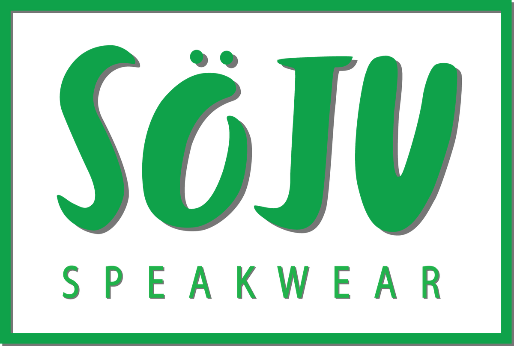
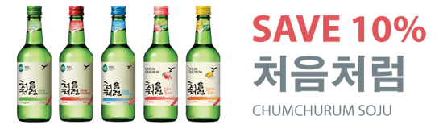

JINRO SOJU
Một sản phẩm huyền thoại tại Hàn Quốc, Jinro Soju CLASSIC giữ kỷ lục trong tất cả các thương hiệu của người tiêu dùng để bán các đơn vị nhất trong thời gian ngắn nhất. Jinro Soju CLASSIC là soju đầu tiên được lọc bốn lần với than làm từ tre của Hàn Quốc. Phương pháp lọc mang tính đột phá này giúp loại bỏ các tạp chất, chỉ để lại một hương vị mượt và sạch sẽ.
- Sản phẩm : Jinro Soju Classic
- Nồng độ cồn: ALC. 19.9% BY VOL.
- Dung tích: 360ml
SOJU CHAMISUL
Nhẹ hơn Chamisul CLASSIC, Chamisul được thực hiện với một chất làm ngọt tự nhiên từ Phần Lan để tạo ra một hương vị độc đáo mới. Tự hào với hàm lượng khoáng chất phong phú, soju kiềm tự nhiên này được tinh chế với than làm từ tre già 3 năm trồng ở một khu vực sạch của Mt. Jiri, nằm trên bờ biển phía nam của Hàn Quốc. công nghệ tiên tiến nâng cao hiệu quả của quá trình sàng lọc than tre tự nhiên, kết quả là sản phẩm rượu sạch và tươi Jinro Chamisul.
- Sản phẩm: JINRO CHAMISUL SOJU
- Nồng độ: ALC. 17.8% BY VOL
- Dung tích: 360ml
JINRO GRAPEFRUIT
Nhẹ hơn Jinro Chamisul, Jinro Chamisul Bưởi đã được người tiêu dùng nữ đón nhận nồng nhiệt . Hương vị bưởi, tươi , tinh khiết quyện vào từng giọt rượu mang đến vị dịu ngọt tinh tế, thuần chất , truyền cảm hứng bất tận cho mỗi cuộc vui. Jinro Chamisul Bưởi đại diện cho một bước ngoặt trong văn hóa thưởng thức rượu Soju Hàn Quốc. Bằng cách đạt được doanh thu 7,8 triệu chai mỗi tháng trong thời gian ngắn sau khi ra mắt, Jinro Chamisul Bưởi đã trở thành thức uống hương vị trái cây phổ biến nhất tại Hàn Quốc.
- JINRO CHAMISUL GRAPEFRUIT
- ALC. 13% BY VOL
- Dung tích: 360ml , 750ml
SOJU GREEN GRAPE
Được chiết xuất từ trái nho xanh Hàn quốc, với công nghệ lọc tiên tiến mang lại hương vị hoàn toàn thuần khiết. Vị ngọt ngào, hương mê say với độ rượu chỉ 13%. Jinro Nho tươi mát như giọt sương mai buổi sớm, thực sự là lựa chọn hoàn hảo cho những cuộc vui của bạn.
- Sản phẩm : Jinro Green Grape
- Nồng độ: ALC. 13% BY VOL
- Dung tích: 360ml
SOJU PLUM
JINRO Mận là dòng rượu soju hoa quả tiếp theo của HITEJINRO, sản phẩm mới được giới thiệu ra thị trường. Có chứa chiết xuất mận hoàn toàn tự nhiên mang lại hương vị ngọt nhẹ và chua thanh. Vị ngon và độ rượu nhẹ dễ uống khiến cho JINRO Mận là đồ uống không thể thiếu trong những tiệc vui dành cho cả đàn ông và phụ nữ.
- Sản phẩm : Jinro Plum
- Nồng độ cồn: ALC. 13% BY VOL.
- Dung tích: 360ml
 JINRO SOJU CLASSIC, JINRO CHAMISUL
JINRO SOJU CLASSIC, JINRO CHAMISUL
JINRO CHAMISUL GRAPEFRUIT, JINRO 24, MAX BEER, HITE BEER
Are registered trademarks of HiteJinro's. © 2016.
All rights reserved. All other trademarks and trade names are properties of their respective owners.